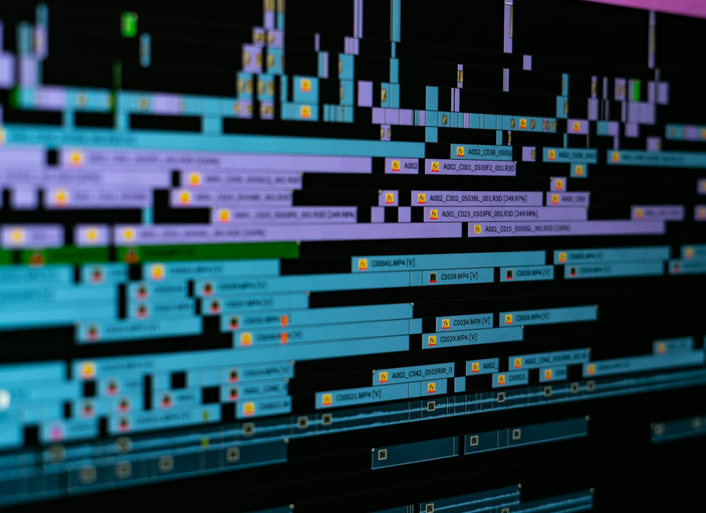
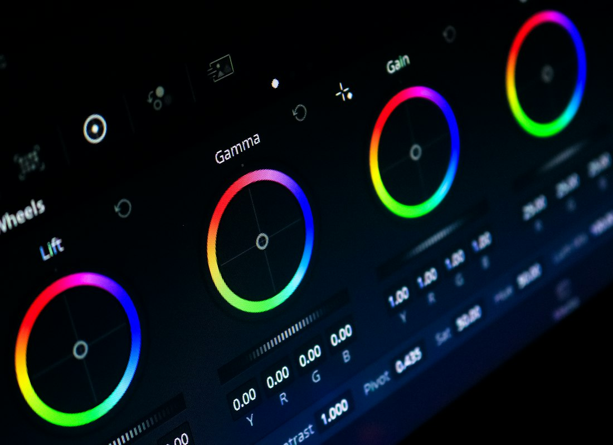
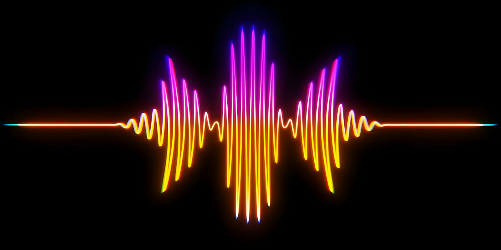

The editor
Four features do most of the work: a timeline that keeps itself tidy, trims that never leave gaps, scopes that read your grade as you make it, and a transcript you can edit like a document.
Snapping timeline
Clips snap into place and gaps close themselves as you edit.

Ripple trim
Trim one clip and everything after it moves with it, in sync.

Realtime scopes
Waveform, vectorscope and histogram update with every grade.

Transcript editing
Delete a sentence in the transcript and the cut follows.
Second instance
Forced light with data-theme, the plain 2 × 2 grid, no autoplay, and everything rendered from JSON at runtime.